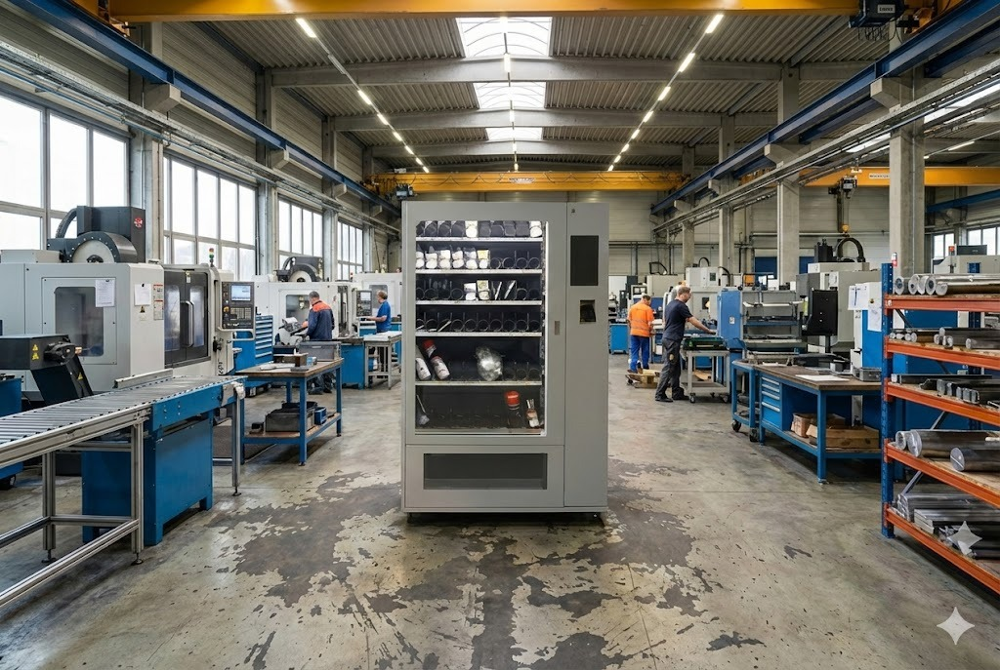
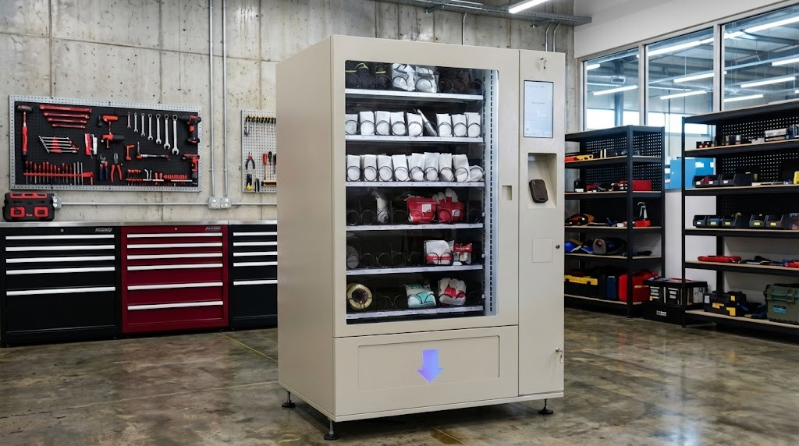

Spiralautomat mit Rücknahmeeinheit
Der Spiralautomat "S-Mat" ist ein vielseitiges Allround-Talent zur modernen, sicheren und effizienten Materialversorgung, ideal für die Ausgabe von Arbeitsschutzartikeln, Verbrauchsmaterialien oder Produktionsmitteln. Dieses intelligente System gewährleistet die zuverlässige 24/7-Verfügbarkeit wichtiger Artikel.

- Effizienzsteigerung: Platz- und Zeitersparnis, verminderte Lohnkosten durch erhöhte Effektivität.
- Kostenreduktion: Sinkende administrative Kosten und Minderung von Verlusten durch fehlende Administration.
- Wirtschaftlichkeit: Wirtschaftliche Wartung und leicht zugängliche Ersatzteile.
- Verfügbarkeit: Rund um die Uhr (0-24h) betriebsbereit dank integrierter unterbrechungsfreier Stromversorgung.
- Anpassungsfähigkeit: Variable interne Gestaltung der Lagerungsplatten, an den jeweiligen Bereich angepasste Software und Bedieneroberfläche, sowie wählbare Gehäusefarbe.
- Sicherheit & Kontrolle: Protokollierbare Ein- und Auslagerung, aktuelles Inventar (auch per Netzwerk zugänglich), Karten-ID-System und Schutz vor unbefugtem Zugriff (verstecktes elektromechanisches Schloss, optional horizontale Schleusentür).

Kapazität & Aufbau
- Bis zu 7 Tabletts für vielfältige Artikelkategorien
- Interne Ablagefächer: max. 7 Stück
- Tablettgrösse: 742 × 595 mm
- Belastbarkeit pro Tablett: 60 kg, Gesamtbelastbarkeit: 420 kg
- Abmessungen: B 1160 mm × T 1000 mm × H 1800 mm
- Leergewicht: 280 kg
Bedienung & Benutzerfreundlichkeit
- Touchscreen mit benutzerfreundlicher, mehrsprachiger Oberfläche
- Identifikationssystem: Karte oder Strichcode
- Anzeige des Firmenlogos auf dem Display
- Optionale farbige Eckelemente für Corporate Design
Sicherheit & Schutz
- Automatisiertes horizontales Sicherheitstor über der Ladeöffnung
- Elektromechanischer Verschluss
- Wartungstür mit einzigartigem Sicherheitsschloss
Stromversorgung & Betriebssicherheit
- Zusatzaggregat für unterbrechungsfreien Betrieb – Bestandsdaten bleiben selbst bei Stromschwankungen erhalten
- Versorgung: 230 V / 50 Hz, 6 A, 24 VDC Steuerstrom
Daten & Auswertung
- Einzelabrufe & Datenexport
- Entwickeltes Berichtsystem für volle Transparenz über Verbrauch und Zugriffe